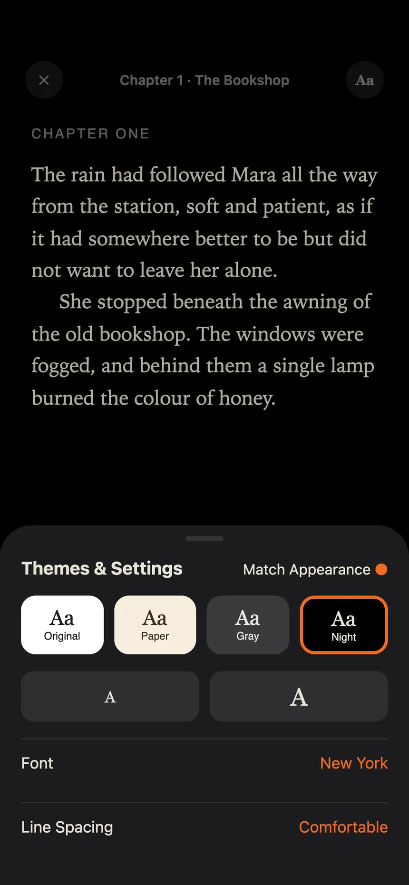
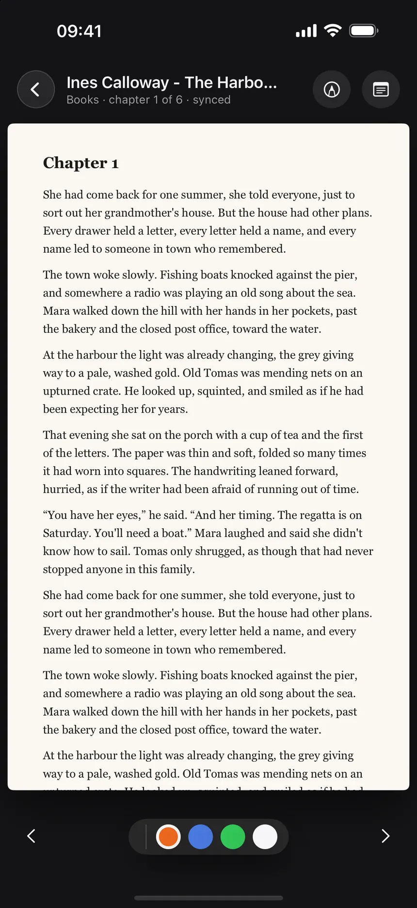
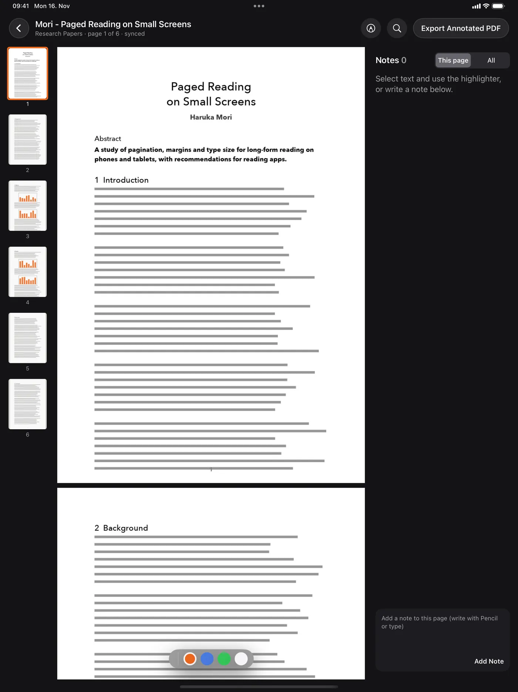
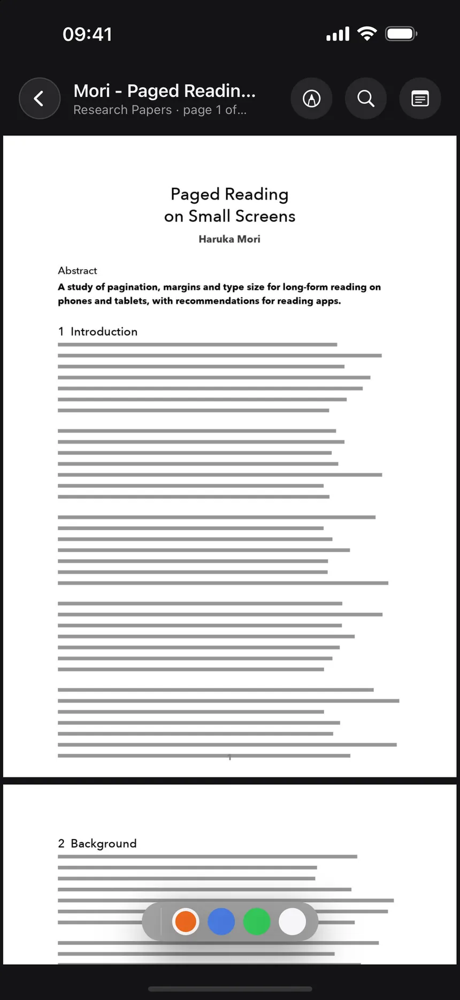
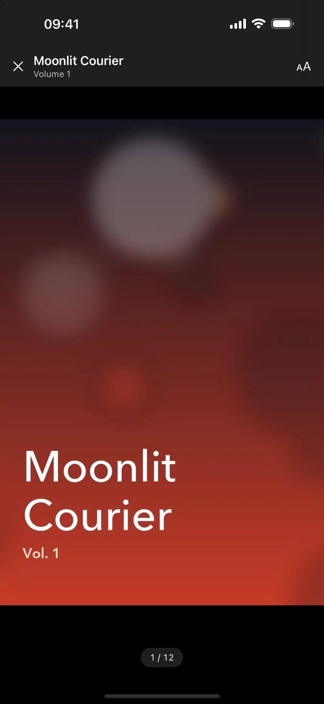
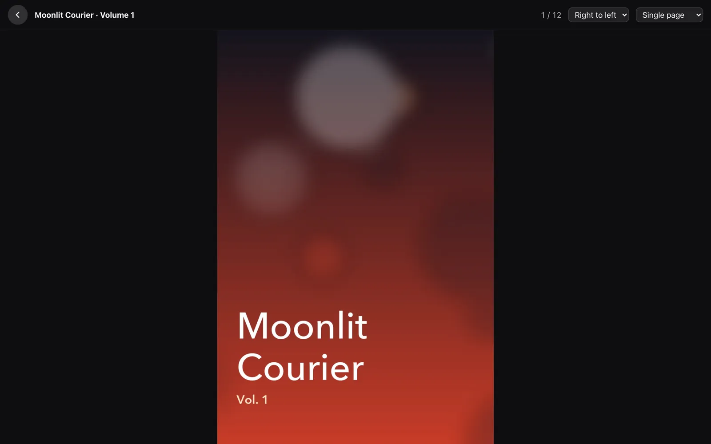

Books, papers, manga and sheet music.
Velora is also a library you read. Books open in a paged reader, papers open as PDFs you can mark up, manga reads the way it was drawn, and sheet music plays along with you.
An Apple Books-style reader.
New in 2.6EPUB chapters are laid out as real pages, so text is never cut mid-line. Swipe or tap the edge to turn the page; on the Mac use the trackpad, scroll wheel or arrow keys. Choose a theme, a font and the line spacing, and Velora remembers the exact page on each device.
- Themes: Auto, Original, Paper, Gray and Night (Auto follows light and dark mode)
- Fonts: the book's own, New York, San Francisco, Georgia, Palatino, Charter, Iowan and Avenir Next
- Text size steps and Compact, Normal or Relaxed spacing
- Highlights in several colours, underline and notes


PDFs with notes, and Apple Pencil on iPad.
Research papers get a section of their own, grouped by subject with first-page covers. Select text with a finger, trackpad or keyboard to highlight, underline or add a note. On iPad, Apple Pencil draws with Apple's own markup tools while your fingers scroll.
- Notes panel for the page or the whole document
- Highlight Notes: click a single note or drag across a figure to highlight exactly that
- Export an annotated PDF
- Highlights, notes and drawings sync to your account only


Right to left, two pages, or one long strip.
Manga is a library type of its own, with readers on every device. Right-to-left is the default; switch to single page, two pages or webtoon scrolling, and your progress follows you.


Scores that play along with you.
New in 2.6Add a Sheet Music library and your scores are on iPhone, iPad, Mac, Apple TV and Vision Pro, laid out like Music: pinned scores and composers on top, then Composers, Recently Played, Interactive, PDF and MIDI. MusicXML scores are drawn as music and play on the device with a cursor that follows the notes. MIDI files are turned into notation the same way. PDF scores open in the page reader, and Make Interactive reads their notes so they play too.
Loop it, slow it down, play your part.
- Loop a bar with one click, or drag across bars and lines to loop a passage; drag the loop's ends to make it longer or shorter. With a metronome and tempo from 25 to 150%
- Count me in: a big countdown and metronome clicks in the piece's tempo before it starts, as many beats as you like
- Every part with its own instrument sound: pick a free sound bank (GeneralUser GS or MuseScore General) on the server's AI page and every device plays violins as violins
- Parts: show, hide or solo-view each instrument, and mute your own part to play it yourself
- In a PDF score, click a single note to highlight it, drag across a passage, or put a note on exactly that spot
- Make Interactive: Velora Server reads the notes in PDF scores (Audiveris, installed on the AI page when you want it) so they play with the cursor, loops and parts. An automation can do it for every new PDF score
- PDF, MusicXML (.musicxml, .mxl) and MIDI; composer folders and “Composer - Title” names fill in the composer (how to name scores)